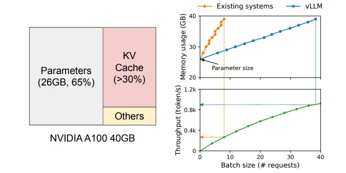
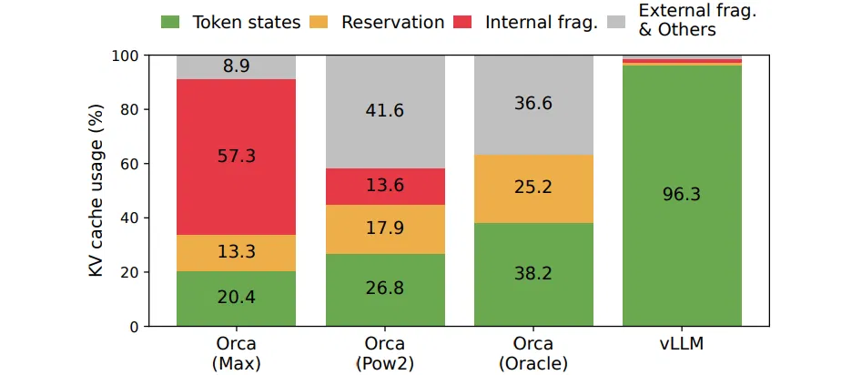
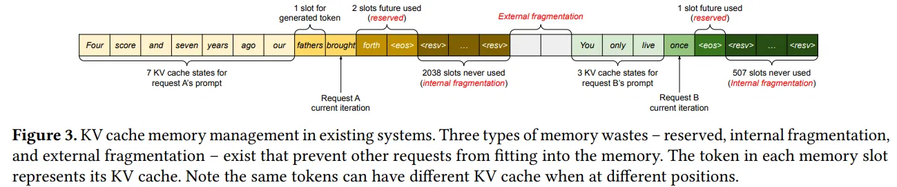
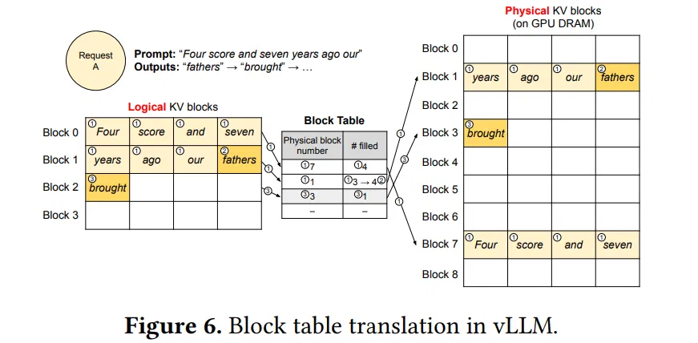
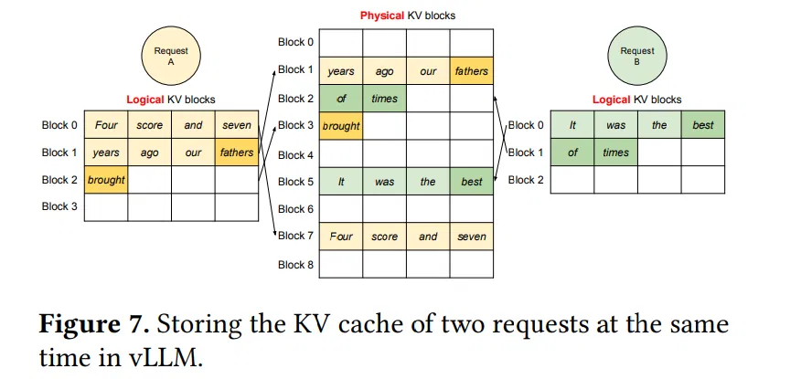
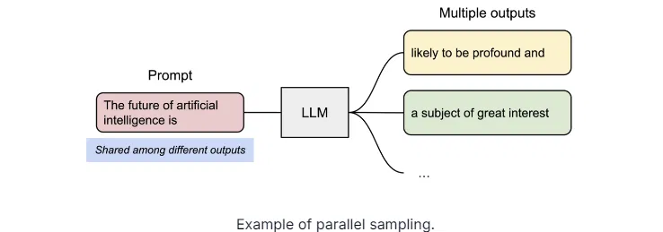
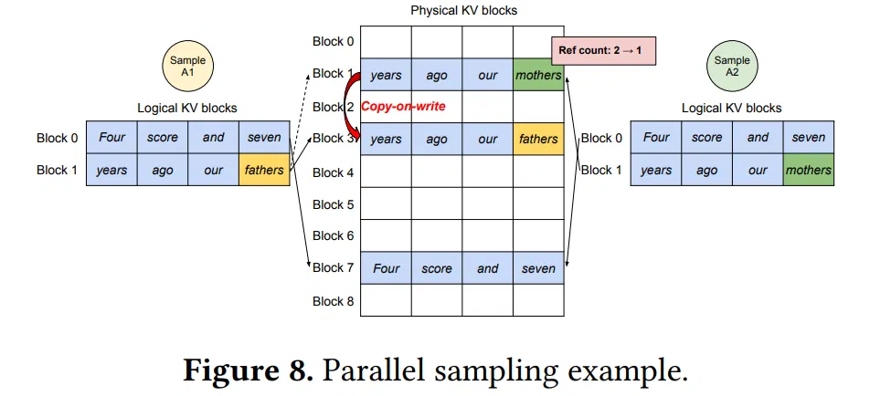

# 前言
本文介绍 VLLM 的 PagedAttention。
参考链接：Transformer 模型详解（图解最完整版） ， Attention is All You Need，Pytorch 版本的 Transformer 实现、一文了解 Transformer 全貌（图解 Transformer）、大模型推理加速：看图学 KV Cache、手撕大模型｜KVCache 原理及代码解析、PagedAttention 论文解读、论文《Efficient Memory Management for Large Language Model Serving with PagedAttention》、vLLM: Easy, Fast, and Cheap LLM Serving with PagedAttention。
# 影响吞吐量的因素
LLM 的核心是自回归的 Transformer 模型。这个模型每次基于 prompt 和之前生成的 token，一次一个的方式生成下一个 token，直到或者最大长度限制。因此这种顺序生成的过程是存储受限性 (memory-bound)，很难充分利用 GPU 的算力。

为了提高吞吐量，需要把多个请求 batch 到一起，以减少 Parameters 的内部搬运，但这需要有效的内存管理。比如上图是 13B 的 LLM，它在 A100 40GB 显卡上运行时的内存分布：灰色部分是权重，在整个 serving 过程中占据 GPU 内存，这些空间占用是固定的；红色部分是推理过程中动态产生的 KV cache，超过 30%；另外一小部分（黄色）用于其它数据，包括激活，是推理计算中临时开辟的空间。
因为模型参数是固定的，而激活只占用很少一部分内存，因此内存管理的核心就是 KV cache。如果管理不善，那么将会极大的影响 LLM 的吞吐量。
上图右边则展示了 vllm 在提高 Batch 以实现更高 Token 吞吐量的能力。在同样的 A100 40GB 显卡、13B LLM 模型的情况下，两者初始情况模型参数已经占用 26G、吞吐量接近零。随着 Batch 的不断增加，受益于 vllm 更优秀的 KV cache 内存管理，内存使用量几乎是线性增长，而吞吐量也接近线性增长。但是其它的系统 batch 不到 10 就占满了显存。
该图足以证明 KV cache 内存管理对吞吐量的影响。
# vllm 与现有系统内存管理对比
传统的 LLM serving 系统没有很好的管理内存。因为深度学习框架要求 Tensor 连续的存放在内存中，所以这些系统也把 KV cache 存放在连续的内存空间里。但是和深度学习训练大部分参数都是不动的不同，KV cache 有它独特的地方：它在解码时会动态变化，并且输出长度和生命周期也是不能提前知道的。这些特性导致现存系统的如下问题：
首先，现存系统会存在大量内部 (internal) 和外部 (external) 碎片 (fragment)。为了把 KV cache 存放在连续的空间，这些系统会为一个请求提前分配 (pre-allocate) 最大可能长度的 cache，这会导致内部碎片，因为实际长度可能远远小于最大长度。而这些内部内存碎片白白浪费了，只有等等这个请求结束才能释放。而且即使我们可以提前预料到生成结果的长度，比如 512。我们在一开始 (比较解码第一个输出 token) 就预留了 512 个 token 的 cache 空间，这些空间也不能被其它请求使用。此外，由于每个输入请求的长度不同，也会导致大量的外部碎片。下图显示了在现存系统中，只有 20.4% - 38.2% 的 KV cache 内存是真正被用于存储有用的 token。

上图显示了当时最好的 Orca 系统的 KV cache 利用率，使用 MAX 分配策略的利用率只有 20.4%，而即使它能够猜测请求的输出长度 (实际是不可能的)，它的利用率最多也就 38.2%。中间的图是使用 2 的幂增长的策略。
其次，现存系统没有很好的利用内存共享的机会。LLM 通常有一些高级的解码算法，比如并行采样 (parallel sampling) 和 beam search。这些算法会在一个时刻生成多个输出。在这些常见中，同一个请求的多条解码路径可以部分的共享 KV cache。但是由于不同序列的 KV cache 连续的存放在不同的空间，因此这种部分共享变得不可能。
vllm 提出了 PagedAttention，这种方法借鉴了操作系统的分页存储管理 —— 分页虚拟内存。PagedAttention 把请求的 KV cache 划分成固定大小的 block，每个 block 存储固定数量 token 的 key 和 value。在 PagedAttention 里，同一个请求的不同 Block 不需要连续存放。我们可以把 block 类比成分页，把 token 类比成字节 (byte)，把请求类比成进程 (Process)。这样每个请求只有实际用到的 block 才被真正放到内存里，这就避免的内部碎片。另外 block 相对一个 request 的所有 cache 来说很小，而且是相同大小的，这不会产生很多外部碎片。最后，由于一个请求的 cache 被切分成了很多 block，因此在不同请求间共享 block 也变得可能。
# PagedAttention

上图展示了现存系统的 KV cache 内存管理：KV cache 默认连续存放。有两个请求 A 和 B，分别预估有 2048 个和 512 个序列长度。现存系统的 KV cache 预分配模式有三部分内存浪费。1. 为未来 token 预留的空间 2. 内部碎片 3. 外部碎片。
外部碎片永远不会被用于生成的 Token，这一点在处理请求之前就已经是明确的。内部碎片也未被使用，但这一点只有在请求完成采样后才能实现。它们都是纯粹的内存浪费。尽管预留的内存最终会被使用，但为整个请求的持续时间预留此空间（尤其是当预留空间较大时），会占用原本可用于处理其他请求的空间。
PagedAttention 解决了以上问题。算法借鉴了操作系统中虚拟内存和分页的经典理念。与传统的注意力算法不同，PagedAttention 算法允许将连续的键值存储在非连续的内存空间中。具体而言，PagedAttention 算法将每个序列的 KV 缓存划分为块，每个块包含固定数量的 token 对应的键值对。在注意力计算过程中，PagedAttention 内核能够高效地识别并获取这些块。
我们直接从例子来看 PagedAttention：

以上图为例：PagedAttention 算法将每个序列的 KV 缓存划分为 block，每个 block 包含固定数量的 token（图中为 4 个），再维护一个块表（block table )，里面的键值对维护了 Logical KV blocks 到 Physical KV blocks 的映射关系。例如 Logical KV blocks 的第 0 block 映射到 Physical KV blocks 的第 7 block，且填充为 4，即第 7 block 的 4 个 token 全部有效。 Logical KV blocks 的第 2 block 映射到 Physical KV blocks 的第 3 block，且填充为 1，即第 3 block 的 1 个 token 有效。
请求 A 的提示词为 “Four score and seven years ago our”(林肯的葛底斯堡演讲)，图中的①表示 Prefill 阶段将这些 token 的 LKV cache 依序分配空间，存储到 GPU Dram 中去，并建立 Block Table 映射关系。②则表示 Decode 阶段，生成的 KV cache 依序继续往后添加，即生成新的 token “fathers”，这个时候第二个逻辑 block 填充的数量从 3 变成 4。第③部，因为 Block1 已经填满，需要申请一个新的 Block，即图中的 Block3，将生成新的 token KV cache “brought” 填进去。

上图展示了多个请求的情况下，PagedAttention 进行 LKV cache 内存管理的示例，与单个请求相似，这里不过多介绍。
从上述图中可以观察到，内存浪费仅发生在序列的最后一段（每个请求的内存浪费少于 4 个 token）。实际上，这使得内存使用效率近乎达到最优，仅造成不到 4% 的浪费。这种内存效率的提升具有极大的益处：它使系统能够将更多的序列进行批量处理，提高 GPU 利用率，并因此显著提高处理速度
# efficient memory sharing
PagedAttention 有另一个关键的优点，高效的内存共享。例如，在并行采样中，从同一个提示词可以生成多个输出序列。在这种情况下，提示词的计算和内存资源可以在各个输出序列之间共享。

具体例子：

如上图所示，同一个请求的两个输出， Sample1 和 Sample2，两者有相同的提示词 “Four score and seven years ago our”，则两个输出可以映射到同一块 Physical VK Blocks，这部分可以共享同一块空间。即第 7 个物理 block 和第 1 个物理 block 都映射到两个逻辑 block。
接下来，Sample1 自循环阶段的第一个输出 token 是 “fathers”，而 Sample2 的输出是 “mothers”，两者不同，所以调度器不得不将 Block1 的内容拷贝一份到 block3，然后由 Sample1 和 Sample2 分别映射。
退一步，假设 Sample1 和 Sample2 自循环阶段的输出 token 仍然相同，那么他们能够继续映射到同一个物理 block。
如果 Prompt 很长，则这种共享会非常有价值。
# 官网动图
这里由两张官网动图，更加形象：

《Example generation process for a request with PagedAttention.》

《Example generation process for a request that samples multiple outputs.》
# 后记
本博客目前以及可预期的将来都不会支持评论功能。各位大侠如若有指教和问题，可以在我的 github 项目 或随便一个项目下提出 issue，并指明哪一篇博客，看到一定及时回复！